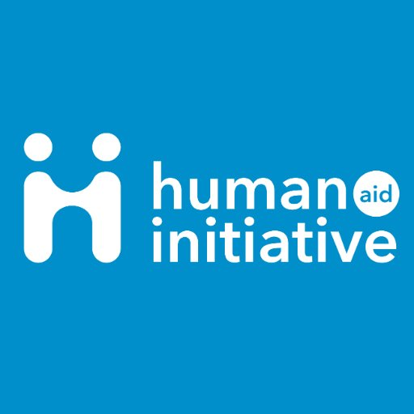

Non-profit organisation
Human Aid Initiative is a charity organisation, focussing on providing relief and aid to people in need. From 2019 to 2021, I have been the sole manager of the Human Aid Initiative business website. Here, I have been in charge of website development, design and maintenance. Through this role I have been given a lot of responsibility and the role has taught me a lot on website design and development practices and the processes of how to create a fully functional non-profit website, allowing customers and donors to make purchases and donations from one location.

Homepage
As a website developer and designer, my role was to maintain front-end and back-end developments and design a fully functioning website to allow for donors to make payments through the website.
Along with this, I have also had the pleasure of creating graphics and marketing flyers, this can be seen on their Instagram page.
After doing some research looking at other non-profit websites and their styles, I tried to take notes of best practices and apply them to HAI’s website. As well as having their main programmes on display on the main homepage, I also needed to implement a safe and robust donation system. This was done through GiveWP plugin. Going into the PHP, I added some additional features to make our donation forms secure (i.e. reCAPTCHA to prevent bots from spamming our system with fraudulent activity). In doing so, I managed to prevent the site from receiving carding attempts and spam within our contact forms.
Using a CMS (Content Management System) like WordPress was ideal for the organisation, as it allows for simple configuration when needing to access the back-end and front-end of the website. The excellent UI of WordPress also allows my client to be able to take it over once I've completed my project. I made these design and functionality choices for a seamless navigation experience.
A fully functioning website that allows people to read more about the organisation, what they do, their events, latest disaster news and to be able to make payments in a secure way. A website that is easy to navigate for all ages and walks of life.
Website design, website development, website security, plug-ins and themes management, maintenance of payment system, visual design, prototyping and testing.
WordPress, GiveWP Plugin, Adobe Photoshop
HTML, CSS, JavaScript and PHP

Emergency Relief & Response Programmes on Desktop and Mobile view
Donation form layout - What users see when they wish to make a donation
Please click the button below to see the live website.